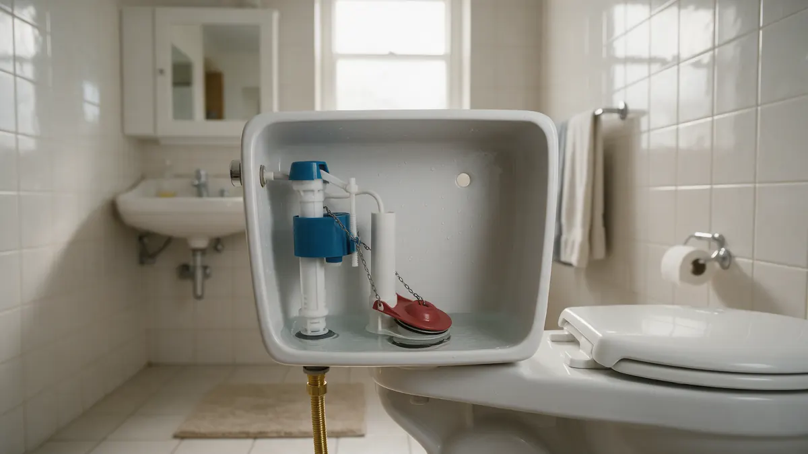

Toilet Troubleshooting Handbook for Colorado Homes

Most toilet problems start small: a faint hiss in the tank, a rocking bowl or a flush that needs two tries. This handbook helps Colorado homeowners work out which part is responsible, what safe adjustments are reasonable, and when to bring in help. Plumbing Pros Colorado connects you with independent local plumbers who fix toilets in your area.
Start at the shutoff
Every toilet has a small stop valve on the wall or floor near the base. Turn it clockwise to stop water refilling the tank. Learning this valve turns an overflow from a crisis into a minor event.
Lift the tank lid and look: a flapper that hangs crooked, a chain that is too tight or a fill valve that never shuts off explains most noise and waste.
Matching the symptom to the part
A toilet that cycles on by itself usually has a leaking flapper. Constant running often means the fill valve or float is set too high. A weak flush can come from mineral-blocked rim jets or a low water level in the tank.
- Tank refills on its own
- Hissing after a flush
- Handle sticks
- Weak or partial flush
- Wobbly bowl
Avoid in-tank cleaning tablets if your flapper keeps failing, since chemicals can soften rubber. Also check that the chain has a little slack, about a link or two, so the flapper can seat fully after every flush.
Leaks and where they hide
Add a few drops of food coloring to the tank. If color shows in the bowl without flushing, the flapper is leaking. Water on the floor can come from the supply line, tank bolts, or the wax ring at the base.
A rocking toilet puts stress on the seal, so a loose base needs attention soon, before subfloor damage develops.
When it is more than the toilet
If other drains gurgle or a tub bubbles when you flush, the blockage may be in the branch or main line. Repeated clogs after careful plunging also call for a closer look, as does water backing out of a floor drain.
A plumber may pull the toilet, check the flange, inspect the line with a camera and reset the unit with a new seal.
Take note of how the toilet behaves, such as whether it clogs after every use or only now and then. That pattern, along with any gurgling elsewhere, saves the plumber a lot of guesswork when diagnosing the cause.
Local water and home details
Hard water scale builds up inside tanks and around jets, which is common in Front Range cities such as Aurora and Lakewood. Cold basements can condense moisture on tanks, giving the appearance of a leak.
Older toilets use more water per flush, and some homeowners choose newer designs when replacing. The independent plumber you are connected with can explain options; we do not do the work ourselves.
Parts a plumber commonly replaces
The usual repair list includes the flapper, fill valve, flush valve seal, tank-to-bowl bolts and gaskets, supply line and wax ring. Many are standard parts made to common sizes, though older tanks may need a model-specific component.
Ask the plumber to explain which part failed and why. A flapper that wears out in a short time can point to water chemistry or chemical tank cleaners, which many homeowners do not realise soften rubber.
Frequently asked questions
Can I use a plunger on any toilet?
A flange plunger is the better match for a toilet bowl. Use steady pushes rather than sharp ones, and keep water levels low. If it fails after a couple of tries, stop to avoid overflow and contact a plumber.
Why does my toilet make a noise hours after flushing?
A ghost flush from a small flapper leak lets water slip into the bowl, so the fill valve briefly runs. Replacing the flapper is a common fix. Dye in the tank helps confirm it.
Is condensation on the tank a leak?
Cold water in a warm, humid room causes sweating on the outside of the tank. A dry paper towel test around the base and supply connection helps tell the difference.
How do I know if the wax ring has failed?
Signs include water around the base after a flush, a smell of sewer gas, a loose toilet or a stained floor. A plumber can lift the toilet and replace the seal.
Should I replace or repair an older toilet?
Parts for many models are simple to swap. Cracks in the bowl or tank, constant clogging and difficulty finding parts push toward replacement. Ask the plumber for guidance.
Why does my toilet clog so often?
Frequent clogs can come from low-flow flushing, a partly blocked trap, too much paper or a restricted drain line. If a plunger clears it every time but the issue returns, a plumber can check the toilet and the line behind it.
Related plumbing services
Toilet Repair by city
- Water leak repair in Pueblo
- Water leak repair in Castle Rock
- Water leak repair in Littleton
- Water leak repair in Morrison
Ready to talk to someone? Call (720) 794-0974 or visit find a plumber to fix a toilet.